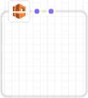

[Canvas (キャンバス)] ペイン
デザイナー は、[canvas (キャンバス)] ペインにテンプレートリソースを図として表示します。図のレイアウトの変更、リソースの追加または削除、このペインのリソース間の接続の追加または削除を行うことができます。たとえば、Auto Scaling グループと起動構成を [リソースタイプ] ペインから [canvas (キャンバス)] ペインに追加できます。これらの関連リソースを接続するには、リソース間で接続をドラッグします。
デザイナー がリソースをモデル化する方法
[リソースタイプ] ペインから [canvas (キャンバス)] ペインにリソースをドラッグすると、デザイナー によりコンテナまたはスクエアオブジェクトとしてモデル化されます。
- コンテナ
-
コンテナリソースは、他のリソースを含むサイズ変更可能な四角形です。たとえば、デザイナー は
AWS::EC2::VPCリソースタイプをコンテナとしてモデル化します。サブネットなどのリソースを VPC にドラッグできます。コンテナリソース
 - スクエアオブジェクト
-
スクエアオブジェクトのリソースは、サイズを変更したり、他のリソースを追加したりすることはできません。たとえば、デザイナー は
AWS::EC2::Instanceリソースをスクエアオブジェクトとしてモデル化します。スクエアオブジェクト

接続リソース
関連リソース間の関連付けを作成するには、リソースを接続します。たとえば、インターネットゲートウェイおよび VPC を [canvas (キャンバス)] ペインに追加した場合、関係はありません。VPC にゲートウェイをアタッチするには、それらを接続する必要があります。リソースを接続する方法は、リソースタイプと、デザイナー がリソースをモデル化した方法によって異なります。次の説明と図に、各方法を示します。
- コンテナへのリソースの追加
-
有効なリソースをコンテナにドラッグすると、デザイナー によりリソースとコンテナの間の関連付けが自動的に作成されます。たとえば、VPC はコンテナリソースです。サブネットを VPC にドラッグすると、デザイナー により 2 つのリソースが自動的に関連付けられます。

これらの関連付けは、次の例に示すとおり、テンプレートに
Ref組み込み関数として表されます。JSON
"PublicSubnet": { "Type": "AWS::EC2::Subnet", "Properties": { "VpcId": { "Ref": "VPC" }, "CidrBlock": "10.0.0.0/24" }YAML
PublicSubnet: Type: 'AWS::EC2::Subnet' Properties: VpcId: !Ref VPC CidrBlock: 10.0.0.0/24リソースをコンテナにドロップしても関連付けが作成されない場合があります。リソース間の接続をドラッグする必要があります (リソース間の接続のドラッグについての詳細は、次の方法を参照してください)。デザイナー によってリソースが関連付けられているかどうかを確認するには、統合された JSON および YAML エディタ を使用して、あるリソースから他のリソースへの
Refがないか探します。たとえば、サブネットコンテナで Auto Scaling グループを追加すると、デザイナー によりグループのVPCZoneIdentifier(サブネット) プロパティが指定されません。2 つのリソースを関連付けるには、Auto Scaling グループからサブネットに接続をドラッグする必要があります。 - リソース間での接続のドラッグ
-
各スクエアおよびコンテナリソースの角には 1 つ以上のドットがあります。これは、接続を作成できるリソースを表しています。接続を作成するには、コネクタ線をドットから対応するリソース対応にドラッグします。たとえば、インターネットゲートウェイを VPC にアタッチするには、VPC ゲートウェイのアタッチメントドットから VPC 上の任意の場所に線をドラッグします。

このような関連付けは、テンプレートで
Ref組み込み関数または別個のリソースタイプとして表されます。たとえば、インターネットゲートウェイと VPC を接続すると、デザイナー によりテンプレートにAWS::EC2::VPCGatewayAttachmentリソースタイプが作成されて関連付けられます。このようなリソースは、[Resource types] (リソースタイプ) ペインには表示されません。JSON
"VPCGatewayAttachment": { "Type": "AWS::EC2::VPCGatewayAttachment", "Properties": { "InternetGatewayId": { "Ref": "InternetGateway" }, "VpcId": { "Ref": "VPC" } }YAML
VPCGatewayAttachment: Type: 'AWS::EC2::VPCGatewayAttachment' Properties: InternetGatewayId: !Ref InternetGateway VpcId: !Ref VPC - リソース間での接続のコーディング
-
場合によっては (2 つのセキュリティグループを接続する場合など)、テンプレートの JSON または YAML を編集して接続を作成する必要が生じることがあります。JSON または YAML を編集して接続を作成する必要がある場合、ハードコード接続 (破線接続) を作成します。[canvas (キャンバス)] ペインでこれらの接続を作成または編集することはできません。

通常、リソースのプロパティ内に参照 (
Ref) を埋め込むと、ハードコード接続が作成されます。たとえば、他のグループからのトラフィックを許可する進入ルールが 1 つのセキュリティグループに組み込まれている場合は、2 つのセキュリティグループ間に接続を定義することができます。次のWebServerSecurityGroupリソースには、PublicLoadBalancerSecurityGroupリソースを参照する進入ルールがあります。JSON
"WebServerSecurityGroup": { "Type": "AWS::EC2::SecurityGroup", "Properties": { "VpcId": { "Ref": "VPC" }, "GroupDescription": "Allow access from HTTP and SSH traffic", "SecurityGroupIngress": [ { "IpProtocol": "tcp", "FromPort": 80, "ToPort": 80, "CidrIp": "0.0.0.0/0" }, { "IpProtocol": "tcp", "FromPort": 22, "ToPort": 22, "CidrIp": { "Ref": "SSHLocation" } } ] } ...YAML
WebServerSecurityGroup: Type: 'AWS::EC2::SecurityGroup' Properties: VpcId: !Ref VPC GroupDescription: Allow access from HTTP and SSH traffic SecurityGroupIngress: - IpProtocol: tcp FromPort: 80 ToPort: 80 CidrIp: 0.0.0.0/0 - IpProtocol: tcp FromPort: 22 ToPort: 22 CidrIp: !Ref SSHLocation
[リソース] メニューを使用した一般的なリソース アクションへのアクセス
[リソース] メニューで、リソースプロパティの編集、リソースのコピー、リソースの削除、またはリソースのドキュメントの閲覧などの、一般的なリソースに対するアクションに簡単にアクセスできます。[リソース] メニューを表示するには、[canvas (キャンバス)] ペインでリソースを右クリックします。ドキュメントリンクをクリックすると、そのリソースのプロパティと構文を説明するテンプレート参照に移動します。
メニューリソース

明示的な依存関係の定義
AWS CloudFormation がリソースを作成し、削除する順序を指定するには、明示的な依存関係を作成できます。明示的な依存関係は、並列リソースの作成と削除を上書きするのに役立ちます。AWS CloudFormation により、同時に処理できるテンプレート内のリソースとできないテンプレート内のリソースが自動的に判断されます。別のソースの属性を参照する (Ref 組み込み関数を使用) か、同じテンプレート内の別のリソースの属性を取得する (Fn::GetAtt 組み込み関数を使用) プロパティを指定すると、依存関係ができあがり、AWS CloudFormation により適切な順序で構築されます。
ただし、状況によっては、明示的に依存関係を定義する必要があります。例えば、ルーティングルールは、ゲートウェイが VPC にアタッチされるまでインターネットゲートウェイを使用することができません。通常、AWS CloudFormation は、暗黙的な依存関係のためにインターネットゲートウェイを作成した直後にルーティングルールを作成します。しかし、AWS CloudFormation はインターネットゲートウェイが VPC にアタッチされる前にルールを作成することがあります。この場合、エラーが発生します。そのため、ゲートウェイ - VPC アタッチメントで明示的に依存関係を定義する必要があります。
明示的な依存関係を作成するには、ルートの DependsOn (*) ドットからゲートウェイ - VPC アタッチメントに線をドラッグします。

明示な依存性を作成する必要がある場合の詳細については「DependsOn 属性」を参照してください。
JSON
JSON では、次の例に示すように、これらの明示的な依存関係がリソースで DependsOn 属性として表されます。
"PublicRoute": { "Type": "AWS::EC2::Route", "DependsOn": "VPCGatewayAttachment", "Properties": { "DestinationCidrBlock": "0.0.0.0/0", "RouteTableId": { "Ref": "PublicRouteTable" }, "GatewayId": { "Ref": "InternetGateway" } }
YAML
YAML では、次の例に示すように、これらの明示的な依存関係がリソースで DependsOn 属性として表されます。
PublicRoute: Type: 'AWS::EC2::Route' DependsOn: - VPCGatewayAttachment Properties: DestinationCidrBlock: 0.0.0.0/0 RouteTableId: !Ref PublicRouteTable GatewayId: !Ref InternetGateway